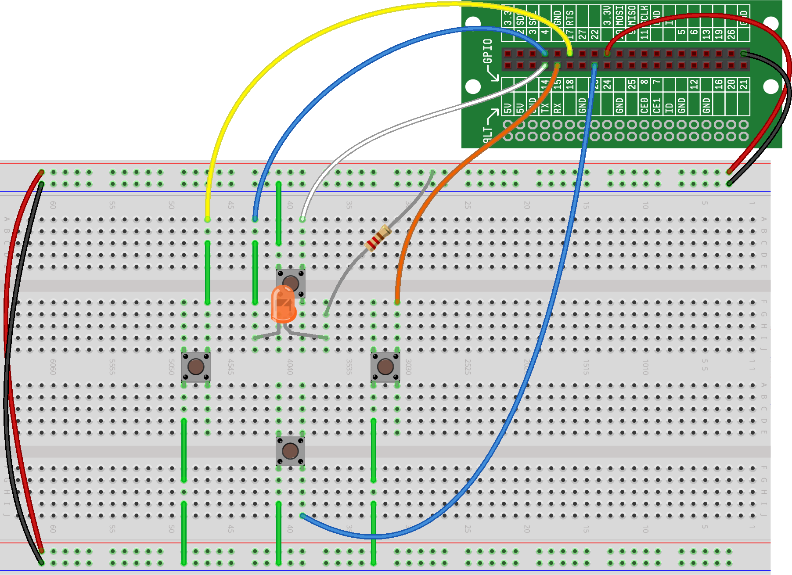
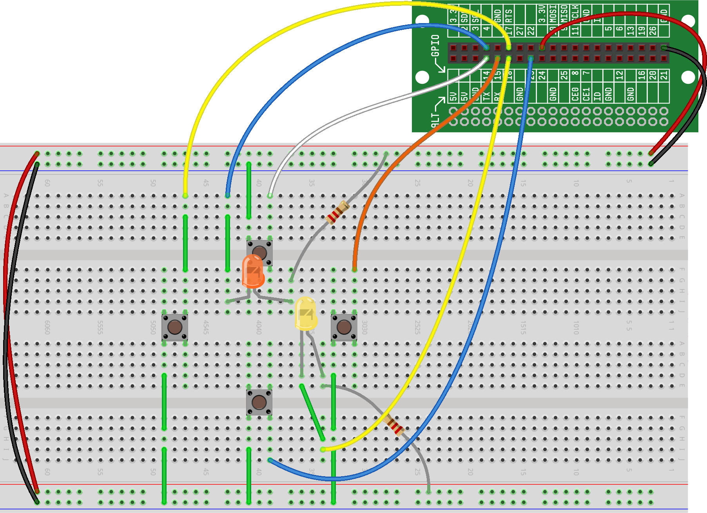
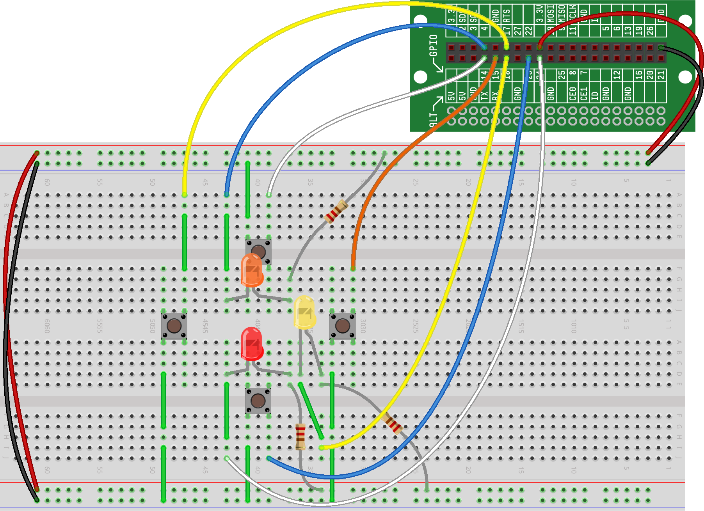
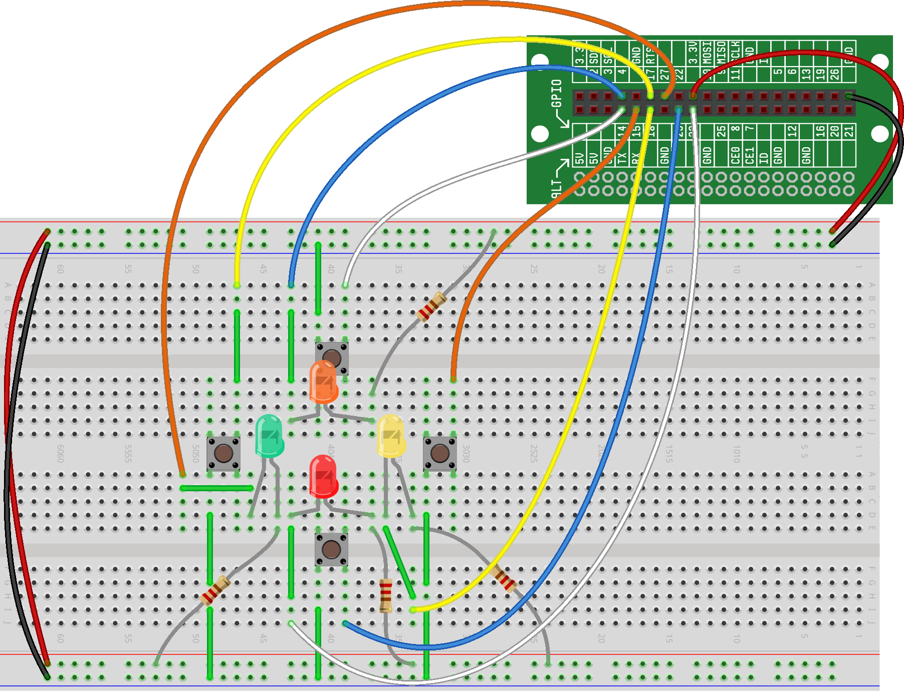

In the previous project, we wired up and tested the four buttons we'll be using for our pattern-matching game. Now it's time to add four LEDs to the circuit from our last project and test those.
Hardware Step #1: Wire Your First LED Using a GPIO Output
For this game that we're building, we'll have four different colored LEDs, and each LED will be associated with a particular button. For that reason, we're going to want to wire our LEDs in locations where we can easily tell which button each LED is associated with. While you're welcome to wire the buttons in any locations you choose, our instructions below will put each LED as close as possible to it's button.
If you recall from Project ???, to wire an LED to a GPIO, the circuit schematic should look as follows:
Based on that, to implement the LED circuit on the breadboard, we wire one side of the LED to 3.3V power with a resistor in-between and wire the other side of the LED to a GPIO. We've choosen GPIO 4 for our first button. As for LED color, it shouldn't matter which LED color goes with which button, so we've arbritarily chosen orange for this one.
Here is what your breadboard should look like:

Keep in mind that you're going to want to ensure that the neither leg of the LED sits in the same connect strip as button or another LED, as the components will need to act independently, and we don't want to inadvertently send (or receive) signals to a component while trying to control another component.
Hardware Step #2: Wire Your Second LED Using a GPIO Output
We can now wire our second LED. We've choosen GPIO 16 for this LED and are using a yellow LED.
Here is what your breadboard should look like:

Hardware Step #3: Wire Your Third LED Using a GPIO Output
Time to wire our third LED to the bottom button, like just the previous two. We've choosen GPIO 23 for this LED and are using a red LED.
Here is what your breadboard should look like:

Hardware Step #4: Wire Your Fourth LED Using a GPIO Output
It's time to wire our final LED. We've choosen GPIO 27 for this LED and are using a green LED.
Here is what your breadboard should look like:

You'll notice that we chose to use an extra jumper to attach the LED to the GPIO -- again, we're going to want to be able to press each of the buttons in our circuit, so keeping the wires off to the sides as much as possible is highly recommended.
Congratulations...you've just finished the wiring for your first game!
Before we move on to start implementing the game software, we're going to write some code to verify that the LEDs are all wired correctly and are working properly. Like with our button test code, our LED test code is going to have two sections -- the first will import the functions we're going to need for the rest of the code and the second will test each of the LEDs.
Code Section #1: Import Needed Functions
The first part of our code is going to import the libraries and functions we'll use later in our code. For this test code, we're going to need two functions:
The Output() function from the rstem.gpio library
The sleep() function from the time library
To make our code more readable, we'll pull in just the Output() function from the rstem.gpio library (that way we won't have to type rstem.gpio.Output() every time we want to call the function); and we'll pull in the entire time library (so we'll need to call time.sleep() each time we want to use that function).
Here's what this introductory code should look like:
INSERT CODE
import rstem
from rstem.gpio import Output
import time
Code Section #2: Test LEDs
To test the LEDs, we'll assign each one to its own variable, turn each on for 3 seconds and then turn each off.
Here's what the LED test code should look like:
INSERT CODE
light1 = Output(4)
light2 = Output(4)
light3 = Output(4)
light4 = Output(4)
light1.on()
light2.on()
light3.on()
light4.on()
time.sleep(3)
light1.off()
light2.off()
light3.off()
light4.off()
Let's run your code. The first thing you should (hopefully) notice is that all of the LEDs should immediately illuminate for three seconds, and then turn off.
If any of your LEDs don't illuminate when you run the program, you should first verify that your code was entered correctly....